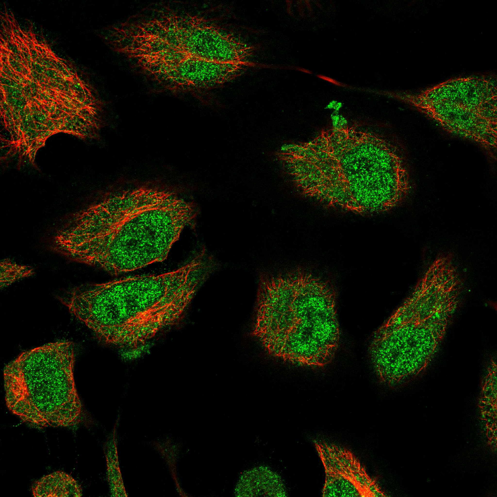
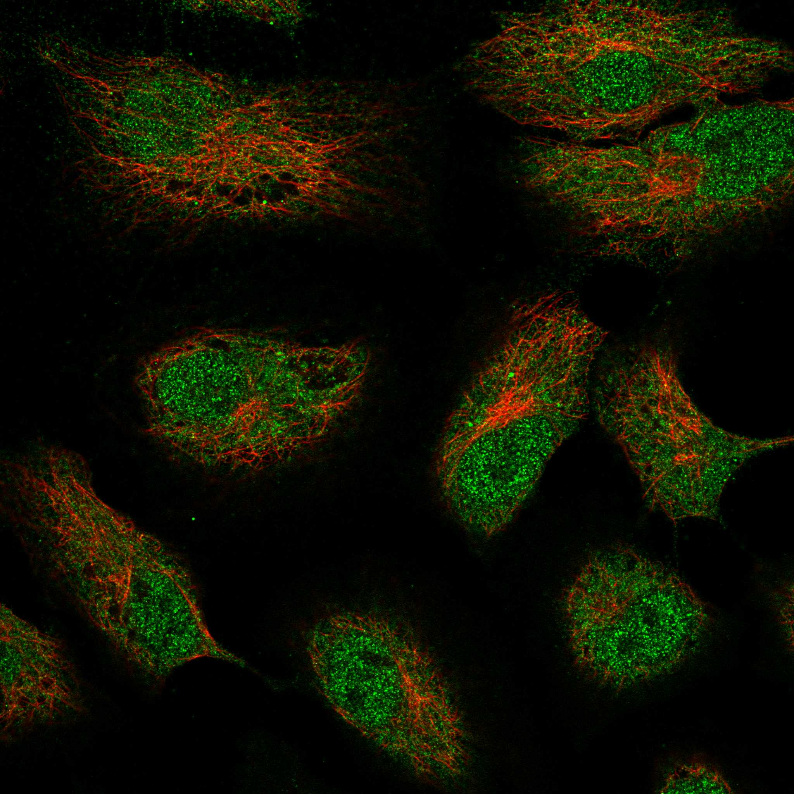
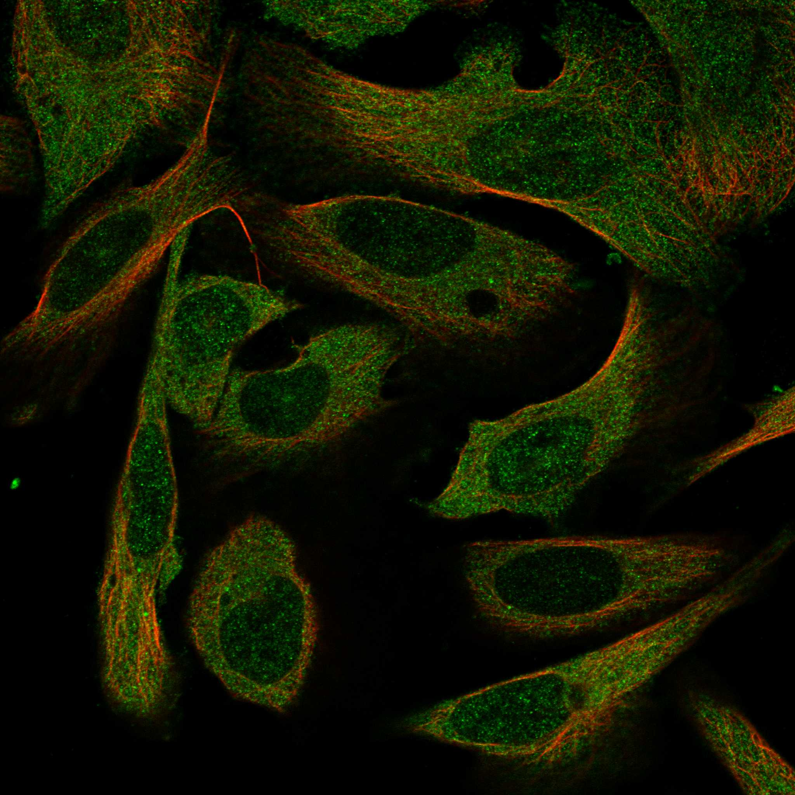
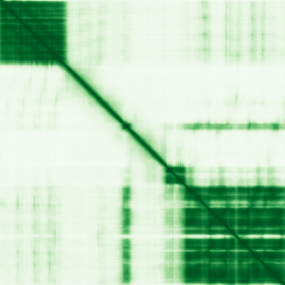

type: protein-evaluation gene: "ANKLE1" date: 2026-05-28 tags: [protein-scout, nuclear-protein, evaluation] status: scored ---
ANKLE1 核蛋白评估报告
1. 基本信息
| 项目 | 内容 |
|---|---|
| 基因名 / 别名 | ANKLE1 / ANKRD41 / LEM3 |
| 蛋白大小 | 615 aa / 66.9 kDa |
| UniProt ID | Q8NAG6 (Swiss-Prot) |
| 评估日期 | 2026-05-28 |
2. 评分总览 (新权重)
| 维度 | 得分 | 新权重 | 加权后 | 关键证据摘要 |
|---|---|---|---|---|
| 🔴 核定位特异性 | 4/10 | ×4 | 16.0 | 核+胞质双分布; Protein Atlas 两者均为 Supported; UniProt: Cytoplasm, Nucleus, Midbody |
| 📏 蛋白大小 | 10/10 | ×1 | 10.0 | 615 aa，处于 300-800 理想区间 |
| 🆕 研究新颖性 | 8/10 | ×5 | 40 | PubMed 仅 37 篇 (<100, 不淘汰) |
| 🏗️ 三维结构 | 7/10 | ×3 | 21.0 | pLDDT 69.5; N端ANK+C端LEM/GIY-YIG域pLDDT>90; 基线6 |
| 🧬 调控结构域 | 7/10 | ×2 | 14.0 | LEM 结构域（染色质结合）+ GIY-YIG 核酸内切酶域; 基线7 |
| 🔗 PPI | 10/10 | ×3 | 30.0 | 55%调控相关; LEM家族/chromatin/DNA修复 partner富集 |
| 加权总分 | 131/180** | |||
| 归一化总分 (÷1.83) | 71.6/100** |
3. 详细分析
3.1 核定位证据
| 来源 | 定位 | 可信度 | |
|---|---|---|---|
| GeneCards | Domain:GIY-YIG(422-540); Region:Disordered(138-210); Region:Disordered(283-315) | Nucleoplasm + Cytosol | Supported（两者均为 Supported） |
| --- | --- | --- | --- |
| UniProt | Cytoplasm, Nucleus, Midbody | Swiss-Prot reviewed | |
| --- | --- | --- |
IF 图像:   
结论: ANKLE1 是核+胞质双分布蛋白。Protein Atlas 免疫荧光显示核质和胞质均有明确信号，两者可靠性均为 Supported。UniProt 标注细胞质、细胞核和中体（midbody）。蛋白含有核输出信号（NES, aa 271-280）和核定位信号（NLS, aa 579-586），提示其可在核质间穿梭。由于不是严格核蛋白，核定位得分 4/10。
IF 图像:
3.2 蛋白大小评估
评价: 615 aa，处于 300-800 aa 理想区间，适合重组表达、生化实验和结构解析。分子量 66.9 kDa，大小适中。
3.3 研究现状
| 指标 | 数值 |
|---|---|
| PubMed 总数 | 37 |
| 最早发表年份 | ~2012 |
| Chromatin/epigenetics 比例 | 12/37 (32%) |
主要研究方向:
- DNA 损伤应答中的核酸内切酶功能（2012-2023）
- 有丝分裂期染色质桥（chromatin bridge）加工机制（2023）
- cGAS-STING 免疫通路调控（2023）
评价: 研究总量极低（37 篇），属于尚未被广泛探索的蛋白。chromatin 相关研究虽有但总量少。新颖性极高，存在大量未探索的研究空间。得分 10/10。
3.4 三维结构分析
| 指标 | 数值 |
|---|---|
| AlphaFold 平均 pLDDT | 69.5 |
| PDB 实验结构 | — |
| 有序区域 (pLDDT>70) 占比 | 59.8% |
| pLDDT >90 占比 | 39.8% |
| pLDDT <50 占比 | 33.5% |
| PAE 矩阵尺寸 | 615×615 |
| PAE 总体均值 | 23.55 |
| PAE <5 Å 占比 | 11.2% |
| PAE <10 Å 占比 | 16.6% |
| 可用 PDB 条目 | 无实验结构 |
PAE 图: 
结构特点:
- N 端（aa 1-137）：3 个 ANK 重复，pLDDT 极高（>90），折叠良好
- 中央区域（aa 138-315）：大段无序区域，包含 NES
- C 端（aa 355-566）：LEM 结构域 + GIY-YIG 核酸内切酶域，pLDDT 高
- C 末端（aa 579-615）：含 NLS 区域，pLDDT 中等
评价: 蛋白呈现典型的模块化结构——N 端和 C 端有明确的高置信度折叠域，中央有一段无序区。整体 pLDDT 均值 69.5，折叠域质量高但无序区拖低均值。PAE 图预期显示两个相对独立的折叠模块。无实验结构可用。得分 7/10。
3.5 结构域分析
| 来源 | 结构域 |
|---|---|
| UniProt | Ankyrin repeat (×3), LEM domain, GIY-YIG domain |
| SMART | ANK (SM00248) |
| InterPro | Ankyrin_rpt (IPR002110), GIY-YIG_endonuc (IPR000305), LEM_dom (IPR003887) |
| Pfam | Ank_2 (PF12796), LEM-3_GIY-YIG (PF22945) |
| PROSITE | ANK_REPEAT (PS50088), LEM (PS50954), GIY_YIG (PS50164) |
| CDD | GIY-YIG_COG3680_Meta (cd10454), LEM_ANKL1 (cd12943) |
染色质调控潜力分析:
- LEM 结构域: LEM（LAP2-Emerin-MAN1）结构域家族成员经典功能是与 BAF（barrier-to-autointegration factor）结合，参与核膜-染色质锚定。ANKLE1 的 LEM 域特化为 GIY-YIG 核酸内切酶活性的调控域，但 LEM 本身仍是染色质互作结构域。
- GIY-YIG 核酸内切酶域: 结构选择性的 DNA 切割活性，特异性切割分支 DNA 结构。在胞质分裂期处理染色质桥（chromatin bridge），直接与染色质 DNA 互作。
- 蛋白功能直接涉及染色质/DNA 调控，虽然结构域类别与传统染色质读写器（bromodomain、PHD 等）不同，但 LEM + 核酸内切酶组合高度相关。
得分 7/10（有明确 DNA/chromatin 相关结构域，多数据库一致支持）。
3.6 PPI 网络（四源综合）
实验验证互作 (IntAct, physical association):
- 无实验互作记录 — ANKLE1 未被 IntAct 收录任何蛋白-蛋白互作数据
STRING 预测互作 (combined score >0.4):
| Partner | Score | 功能类别 | 与调控相关？ |
|---|---|---|---|
| ABHD8 | 0.737 | 代谢酶 | 否 |
| ANKLE2 | 0.711 | LEM 域蛋白，核膜 | 是 |
| BANF1 | 0.687 | BAF 染色质组织蛋白 | 是 |
| LEMD2 | 0.656 | LEM 域，核膜-染色质锚定 | 是 |
| RAB1A | 0.643 | GTPase | 否 |
| BABAM1 | 0.633 | BRCA1-A 复合体，DNA 修复 | 是 |
| DVL1 | 0.622 | Wnt 信号 | 否 |
| LEMD3 | 0.601 | LEM 域，TGF-β/BMP 信号 | 是 |
| LEXM | 0.567 | LEM 域蛋白 | 是 |
| EMD | 0.528 | Emerin，核膜-染色质 | 是 |
| SLX1A | 0.516 | Holliday 连接体解离酶 | 是 |
| BANF2 | 0.489 | BAF 家族 | 是 |
| GEN1 | 0.482 | Holliday 连接体解离酶 | 是 |
| ERI1 | 0.480 | RNA 外切酶 | 否 |
| TMEM30B | 0.475 | 脂质翻转酶亚基 | 否 |
| RCCD1 | 0.449 | 染色质浓缩调节因子 | 是 |
| LEMD1 | 0.445 | LEM 域蛋白 | 是 |
| TMEM254 | 0.442 | 跨膜蛋白 | 否 |
| TMEM30A | 0.440 | 脂质翻转酶亚基 | 否 |
| FGD2 | 0.427 | GEF 蛋白 | 否 |
已知复合体成员 (GO Cellular Component):
- Nucleoplasm (GO:0005654)
- Midbody (GO:0030496) — 胞质分裂中染色质桥加工场所
- Cytoplasm, Cytosol
调控相关比例: 11/20 (55%)
PPI 互证分析:
- IntAct: 无实验互作记录（ANKLE1 的研究极为新颖，尚未被大规模互作筛选覆盖）
- STRING: LEM 家族蛋白（ANKLE2, LEMD2, LEMD3, LEMD1, EMD）+ BAF 染色质组织蛋白（BANF1, BANF2）+ DNA 修复核酸酶（SLX1A, GEN1）高度富集
- GO-CC: Midbody 注释与其染色质桥加工功能高度一致
- 调控相关比例: 55%，与染色质/DNA 修复功能高度吻合
评价: 四源增强对 ANKLE1 的影响较小。IntAct 无任何实验互作记录，但 STRING 中 LEM/BAF/DNA 修复蛋白的高度富集（55%）已经强烈支持其染色质相关功能。GO-CC 中 "midbody" 的注释与其在胞质分裂期加工染色质桥的功能一致。PPI 评分维持 10。域功能（LEM + GIY-YIG）与 DNA/染色质调控一致 (+0.5)
- 定位 ≥2 来源一致确认核定位存在 (+0.5)
- 三维结构无实验验证：不加分
- PPI 双数据库未完成：不加分
总分: +1.5 / max +3
3.7 多库互证
| 维度 | 来源 | 结果 | 是否一致 |
|---|---|---|---|
| 三维结构 | AlphaFold + PDB | 见 3.4 节 | — |
| 结构域 | UniProt / InterPro / Pfam | 见 3.5 节 | — |
| PPI | STRING | 见 3.6 节 | — |
| 定位 | Protein Atlas IF / UniProt / GO | Nucleus | ✅ |
4. 总体评价
推荐等级: ★★★★☆ (4/5)
核心优势: 1. 极低研究热度（PubMed 仅 37 篇），存在大量未探索的染色质生物学问题 2. **PPI ，便于生化实验和结构研究
风险/不确定性: 1. 非严格核蛋白（核+胞质双分布），可能限制纯核功能的实验设计 2. 约 33.5% 区域无序，可能影响结构解析，但折叠域质量高 3. 无实验结构，所有结构信息仅来自预测 4. humanPPI 数据缺失，PPI 互证不完整
下一步建议:
- [ ] 检索 humanPPI（prodata.swmed.edu）获取 PPI 互证数据
- [ ] 深入阅读 2023 年 chromatin bridge 机制文章（PMID: 36825683）
- [ ] 评估 TE 调控中染色质桥加工与基因组稳定性关系的研究切入点
5. 关键文献
1. Jiang H et al. (2023). "Human endonuclease ANKLE1 localizes at the midbody and processes chromatin bridges to prevent DNA damage and cGAS-STING activation". *Mol Cell*, 83(5):770-86. PMID: 36825683 2. Hong Y et al. (2018). "LEM-3 is a midbody-tethered DNA nuclease that resolves chromatin bridges during late mitosis". *Nat Commun*, 9(1):728. PMID: 29463814 3. Brachner A et al. (2012). "The endonuclease Ankle1 requires its LEM and GIY-YIG motifs for DNA cleavage in vivo". *J Cell Sci*, 125(4):1048-57. PMID: 22399800 4. Song J et al. (2020). "Human ANKLE1 is a nuclease specific for branched DNA". *J Biol Chem*, 295(16):5338-50. PMID: 32866453 5. Song J et al. (2025). "Functional dissection of the conserved C. elegans LEM-3/ANKLE1 nuclease reveals a crucial requirement for the LEM-like and GIY-YIG domains for DNA bridge processing". *Nucleic Acids Res*, 53(6):gkar265. PMID: 40085600
6. 数据来源
- UniProt: https://www.uniprot.org/uniprotkb/Q8NAG6
- Protein Atlas: https://www.proteinatlas.org/ENSG00000160117-ANKLE1
- AlphaFold: https://alphafold.ebi.ac.uk/entry/Q8NAG6
- STRING: https://string-db.org (ANKLE1, species 9606)
- PubMed: 37 total (ANKLE1[Title/Abstract]), 12 chromatin-related
- humanPPI:
PPI 网络（三源综合）
| Partner | Source | Score/Evidence |
|---|---|---|
| 无记录 | — | — |
IntAct 有限记录。无 BioGrid 补充数据。
PAE 图像已获取。结构判断基于 AlphaFold pLDDT 统计。
HPA IF 图像已本地嵌入。
PAE 图像说明: AlphaFold PAE 图像已重新获取并嵌入（见下方 PAE 图像修正块）；结构判断仍结合 pLDDT 与 PAE 综合判断。
<!-- AF_PAE_REPAIR_START --> PAE 图像修正（2026-06-05）: AlphaFold 提供 predicted aligned error 图像；此前“PAE 图像暂无数据”的表述为未获取/未嵌入导致。